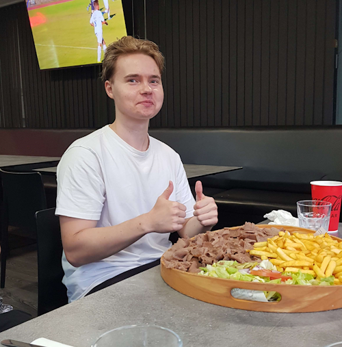

Victory point Tigers
Victory point Tigers on Jyväskyläläisen pelikahvila Victory pointin epävirallinen esports-joukkue.
Rosteri
- Veijari

Turun(Paimion) mahtavin midlaner, joka on hionut akali taitojaan jo yli kymmenen vuoden ajan, samalla larpaten Westriceä.
- Sampsa

Länsi-Vantaan, sekä mahdollisesti koko Uudenmaan hurjin toplaneri, joka pyörittää vihollisia kuin Garen miekkaansa. (toplane on ihan perseestä)
- Summanen
Arttu "Moskovan kauhu" Summanen, jokaisen junglerin kauhu. Junglerit Mikkelin betoniviidakosta Moskovaan asti pelkäävät tätä absoluuttista yksikköä. On kehittänyt kuuluisan "Jatketaan, jatketaan!" taktiikan, jolla ei vieläkään ole voitettu yhtään invadea.
- Guuger
Pieksämäen oma Leroy Jenkins. Luontainen ADC-pelaaja(pakotettu). Yleisin vastaus pelikutsuihin: "Ei pysty, raidi kesken".
- Severi
Botlanen support kaksikon sarvekas osapuoli. Perimätiedon mukaan Severi toimii Helsingin yliopistolla jonkinasteisena puistokemistinä. Severiltä saa snapissä vain kissakuvia.
- Kari
Jyväskylän oma poika(kai). Toinen joukkueen support pelaaja, tunnetaan myös koodinimellä "Järjenääni". On saavuttanut Jodelissa verrattaista menestystä postauksellaan joka käsitteli hänen asunnossaan majailleita animeturisteja.
- Vilee
Joukkueen sielu, manageri, päävalmentaja. Pieksämäen paroni ei kumartele ketään tai mitään. Savossa kiertää legenda että valoisina kesäöinä metsäteillä voi törmätä Toyota Carinaan ja kun se huristelee ohi, jää ympäristöön kaikumaan helvetillinen nauru.